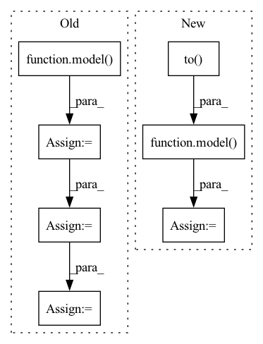

Pattern ID :11470

Before Change
model.zero_grad()
pred = model(
torch.autograd.Variable(batch).to(device), lengths.cpu().numpy()
) //// perform forward pass
pred = torch.squeeze(pred)
loss = criterion(
pred.to(device), torch.autograd.Variable(targets.float()).to(device)
) //// compute loss
loss.backward() //// perform backward pass
optimizer.step() //// update weights
pred_val = pred >= 0.5 //// get predictions
y_true += list(targets.int().numpy()) //// accumulate targets from batch
y_pred += list(
pred_val.data.int().detach().cpu().numpy()
) //// accumulate preds from batch
total_loss += loss //// accumulate train loss
After Change
model.zero_grad()
//// perform forward pass
pred = model(
sent1.to(device),
sent2.to(device),
sents1_len.to(device),
sents2_len.to(device),
)
//// compute loss
loss = criterion(
pred.to(device), torch.autograd.Variable(targets.float()).to(device)
)
//// perform backward pass
loss.backward()
//// update weights
optimizer.step()
//// accumulate targets from batch
y_true += list(targets.float().numpy())
//// accumulate preds from batch
y_pred += list(pred.data.float().detach().cpu().numpy())
//// accumulate train loss
total_loss += loss
In pattern: SUPERPATTERN
Frequency: 3
Non-data size: 7
Instances
Fragment ID: 39131221
Project Name: shahrukhx01/siamese-nn-semantic-text-similarity
Commit Name: f3d054dd14ef532c408b1306c3341115777ac22f
Time: 2021-12-30
Author: sk28671@gmail.com
File Name: siamese_sts/trainer/train.py
M Class Name: AnonimousClass
N Class Name: AnonimousClass
M Method Name: train_model(6)
N Method Name: train_model(6)
M Parent Class:
N Parent Class:
M File Name: siamese_sts/trainer/train.py
N File Name: siamese_sts/trainer/train.py
M Start Line: 16
M End Line: 47
N Start Line: 16
N End Line: 59
'>
Before Change
batch, targets, lengths
) //// sorts the batch wrt the length of sequences
pred = model(
torch.autograd.Variable(batch).to(device), lengths.cpu().numpy()
) //// perform forward pass
pred = torch.squeeze(pred)
loss = criterion(
pred.to(device), torch.autograd.Variable(targets.float()).to(device)
) //// compute loss
pred_val = pred >= 0.5 //// get predictions
y_true += list(targets.int())
y_pred += list(pred_val.data.int().detach().cpu().numpy())
total_loss += loss
acc = accuracy_score(y_true, y_pred) //// computing accuracy using sklearn"s function
After Change
_,
) in data_loader["val_loader"]:
//// perform forward pass
pred = model(
sent1.to(device),
sent2.to(device),
sents1_len.to(device),
sents2_len.to(device),
)
//// compute loss
loss = criterion(
pred.to(device), torch.autograd.Variable(targets.float()).to(device)
)
y_true += list(targets.float())
y_pred += list(pred.data.float().detach().cpu().numpy())
total_loss += loss
//// computing accuracy using sklearn"s function
acc = r2_score(y_true, y_pred)
'>
Fragment ID: 39131229
Project Name: shahrukhx01/siamese-nn-semantic-text-similarity
Commit Name: f3d054dd14ef532c408b1306c3341115777ac22f
Time: 2021-12-30
Author: sk28671@gmail.com
File Name: siamese_sts/trainer/train.py
M Class Name: AnonimousClass
N Class Name: AnonimousClass
M Method Name: evaluate_dev_set(5)
N Method Name: evaluate_dev_set(5)
M Parent Class:
N Parent Class:
M File Name: siamese_sts/trainer/train.py
N File Name: siamese_sts/trainer/train.py
M Start Line: 78
M End Line: 95
N Start Line: 91
N End Line: 116
'>
Before Change
model.to(device)
target_img_tensor.to(device)
model.eval()
out = model(target_img_tensor)
// ps = torch.exp(out)
ps = out
prediction_percentages = (ps.cpu().numpy()[0]).tolist()
pred = prediction_percentages.index(max(prediction_percentages))
pred_labels.append(pred)
show_roc(true_labels, pred_labels, auc=auc, figure_size=figure_size)
After Change
target_data_loader = torch.utils.data.DataLoader(target_data_set,batch_size=10,shuffle=False)
for i, (imgs, labels) in enumerate(target_data_loader):
imgs = imgs.to(device)
labels = labels.to(device)
true_labels.append(labels.tolist())
with torch.no_grad():
model.eval()
out = model(imgs)
// ps = torch.exp(out)
ps = out
print(ps.shape)
print (ps)
'>
Fragment ID: 39131166
Project Name: radtorch/radtorch
Commit Name: 74b5ef917af3aebdf033166bf8b81cbc9ceb9b6e
Time: 2020-03-01
Author: elbanan@users.noreply.github.com
File Name: radtorch/visutils.py
M Class Name: AnonimousClass
N Class Name: AnonimousClass
M Method Name: show_nn_roc(5)
N Method Name: show_nn_roc(5)
M Parent Class:
N Parent Class:
M File Name: radtorch/visutils.py
N File Name: radtorch/visutils.py
M Start Line: 199
M End Line: 216
N Start Line: 201
N End Line: 215